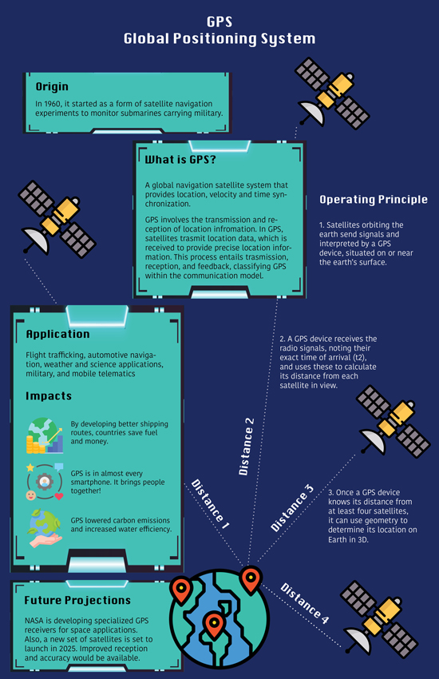

Seohui's AENG 110 Class Infographic Project |
||
| Home Photo Project Infographic Project Video Project | ||
|

Global Positioning System | ||
|
Resources 2) The History of GPS, Holly Stephens, https://spytec.com/blog/the-history-of-gps (2022.08.08) 3) What Is GPS and how do global positioning systems work?, Geotab Team, https://www.geotab.com/blog/what-is-gps/ (2020.05.22) |
Explanation of Project Working principles |
|
|
© 2023 Seohui Lee |
||